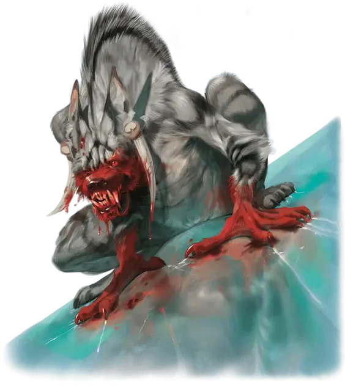

Гнолл-вампир
Gnoll Vampire
Средняя Нежить (Перевертыш), нейтрально-злая

Класс Доспеха 17 (природный доспех)
Хиты 93 (11к8 + 44)
Скорость 30 футов
| мод | спас | ||
|---|---|---|---|
| СИЛ | 20 | +5 | +5 |
| ЛОВ | 18 | +4 | +7 |
| ТЕЛ | 18 | +4 | +7 |
| мод | спас | ||
|---|---|---|---|
| ИНТ | 6 | −2 | −2 |
| МДР | 12 | +1 | +1 |
| ХАР | 9 | −1 | −1 |
Сопротивление урону некротическая энергия; дробящий, колющий, рубящий от немагических атак
Чувства тёмное зрение 120 футов, пассивное Восприятие 11
Языки Бездны, Гноллий
Опасность 8 (3900 опыта)
Бонус мастерства +3
Особенности
Тонкий нюх. Вампир совершает с преимуществом проверки Мудрости (Восприятие), полагающиеся на обоняние.
Буйство. Если вампир в свой ход опускает рукопашной атакой хиты существа до 0, он может бонусным действием переместиться на расстояние до половины своей скорости и совершить атаку укусом.
Регенерация. Вампир восстанавливает 10 хитов в начале своего хода, если у него есть хотя бы 1 хит, и он не находится ни под солнечными лучами ни в текущей воде. Если вампир получает урон излучением или урон от святой воды, эта особенность не действует в начале следующего хода вампира.
Перевёртыш. Если вампир не находится под солнечным светом и не стоит в текущей воде, он может действием превратиться в Большую размером гиену или Среднее размером облако тумана, или же принять свой истинный облик.
Находясь в облике гиены, вампир не может говорить, его скорость ходьбы равна 50 фт. Вся его статистика за исключением размера и скорости остаётся той же самой. Всё, что он носит, превращается вместе с ним, а то, что он несёт — нет. Он принимает свой истинный облик, если умирает.
Находясь в облике тумана, вампир не может совершать действий, говорить и пользоваться предметами. Он ничего не весит, обладает скоростью полёта 20 футов, может парить и может входить в пространство враждебных существ и останавливаться там. Кроме того, если через некое пространство может проходить воздух, то это же может сделать и туман, без протискивания, хотя и не может проходить сквозь воду. Он совершает с преимуществом спасброски Силы, Ловкости и Телосложения, и обладает иммунитетом к немагическому урону, за исключением урона, который он получает от солнечного света.
Слабости вампира. Вампир обладает следующими слабостями:
• Ненависть к Небесному. Когда вампир слышит произнесенные на Небесном слова, он обязан на своем следующем ходу попытаться атаковать источник этих слов. Если эти слова исходят из нескольких источников и с противоположных сторон, вампир считается опутанным. В остальных случаях он бросается в атаку на ближайший по его мнению источник.
• Отвращение к парфюму. Вампир совершает с помехой рукопашные броски атак, совершаемых против любого надушенного парфюмом существ.
• Кол в сердце. Если колющее оружие, изготовленное из дерева, вонзить в сердце вампира, пока он недееспособен в своем месте отдыха, вампир станет парализованным, пока кол не вынут.
• Гиперчувствительность к солнечному свету. Вампир получает урон излучением 20, если начинает ход под солнечным светом. Находясь на солнечном свету, он совершает с помехой броски атаки и проверки характеристик.
Необычная природа. Вампир не нуждается в воздухе.
Действия
Мультиатака. Вампир совершает две атаки: одну укусом и одну когтями.
Когти. Рукопашная атака оружием: +8 к попаданию, досягаемость 5 футов, одно существо. Попадание: Рубящий урон 10 (2к4 + 5). Вместо причинения урона вампир может схватить цель (Сл высвобождения 13).
Укус. Рукопашная атака оружием: +8 к попаданию, досягаемость 5 футов, одно согласное существо или существо, схваченное вампиром, недееспособное или опутанное. Попадание: 12 (2к6 + 5) колющего урона плюс 9 (2к8) урона некротической энергией при этом максимум хитов цели уменьшается на величину равную полученному некротическому урону и вампир восстанавливает себе хиты равные той же величине. Снижение максимума действует до тех пор пока цель не закончит продолжительный отдых. Цель умирает если её максимум хитов уменьшится до 0.
Устрашающий хохот (только в обликах вампира и гиены). Вампир издаёт леденящий кровь хохот. Каждое существо по выбору вампира, находящееся в пределах 120 футов и слышащее этот хохот должно преуспеть в спасброске Мудрости Сл 15, иначе станет испуганным на 1 минуту. Существо может повторять спасбросок в конце каждого своего хода, оканчивая действия эффекта на себе при успехе. В случае успешного спасброска, или если эффект на существе окончился, оно становится иммунно к эффекту этого действия вампира в течение следующих 24 часов.
Отравляющий взгляд (только в обликах вампира и гиены). Вампир выбирает в качестве цели одного гуманоида в пределах 30 футов, которого он может видеть. Если цель также может видеть вампира, она должна преуспеть в спасброске Телосложения Сл 15, иначе станет магически отравленной на 24 часа. В случае успешного спасброска оно становится иммунно к эффекту этого действия вампира в течение следующих 24 часов.
Описание
Если безумный голод гнолла настолько велик, что он жаждет плоти и крови даже после своей смерти, он может восстать из мёртвых в качестве вампира и продолжить своё безудержное кормление.
Гнолл-вампир — свирепый хищник, питающийся кровью живых существ. Как только гнолл улавливает запах своей жертвы, он заходится в маниакальном хохоте, быстро приближается к добыче и убивает её, разрывая плоть когтями и поглощая мясо и кровь, не оставляя в итоге после себя ничего, кроме костей, хрящей и забрызганных кровью вещей жертвы.
Гноллы-вампиры неразборчивы в еде, предпочитая плоть и кровь гуманоидов, включая и других гноллов. Их носы не переносят запаха парфюма, а уши не выносят слов, произносимых вслух на Небесном. Они могут по желанию не отражаться в зеркалах.
В отличие от обычных вампиров, у гноллов-вампиров нет гробов, в которых они отдыхают, и им некуда возвращаться в случае гибели телесной оболочки. Их не пугает проточная вода, и они могут входить в жилые дома без приглашения обитателей. Когда гноллу-вампиру нужно быстро перемещаться, он принимает облик гигантской исхудавшей гиены. Когда он хочет застать свою жертву врасплох, то принимает форму туманного облака. После того, как вампир выпивает кровь жертвы, туманное облако приобретает малиновый оттенок на час, а потом снова становится бесцветным.
Текали-ли и Пещеры Голода
Текали-ли был клыком Йеногу, могущественным гноллом, чья стая вторглась в долину Ледяного Ветра более века назад. Когда бессмысленное истребление гноллами оленьих стад стало угрожать выживанию регхедских кочевников, их племена объединились против гноллов и выследили их осенью 1333 ЛД. Текали-ли и его выжившие сородичи сбежали в тундру, спасаясь от преследующих кочевников.
Израненные гноллы нашли ледяную трещину на краю ледника Регхед и укрылись в ней на зиму. Чтобы сохранить жизнь своему лидеру, другие гноллы позволили Текали-ли сожрать их одного за другим, но его голод не утих. Ориль наткнулась на голодное, полузамерзшее существо и швырнула Текали-ли в ледяную гробницу глубоко внутри ледника. Поступив так, Морозная Дева желала сохранить то, чем стал гнолл — воплощением беспощадного влияния зимы на живых существ.
В данный момент Текали-ли представляет собой гнолла-вампира, не употреблявшего пищи уже несколько десятилетий. Искатели приключений, используя магию поэмы о Морозной Деве для создания прохода через ледник, неосознанно освобождают голодающего гнолла из его ледяной гробницы. Для получения дополнительной информации о логове Текали-ли и Пещерах Голода, см. главу 6.